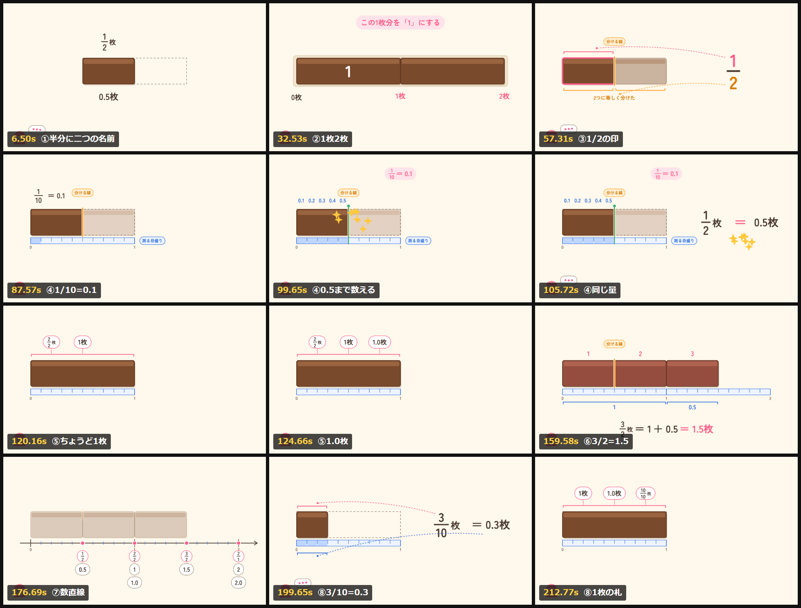

整数・分数・小数は、同じ量につけた別の名前。板チョコ1枚を「1」と決めて見てみよう。
「この半分、分数だと2分の1、小数だと0.5。どうして名前が二つあるの？」という子どもの問いから始まる。板チョコ1枚分を「1」と決めると、1枚・2枚は整数、半分は等しく分けた1つ分だから分数、青い目盛りで読めば小数。最後に数直線に置くと、同じ量は同じ場所に来る。
| 場面 | 見せるもの | テロップ |
|---|---|---|
| 1 同じ半分に、二つの名前？0:00 | 半分のチョコに「1/2枚」と「0.5枚」の札。残り半分は点線の輪郭 | 同じ量、いろいろな表し方 |
| 2 1枚、2枚を数える0:21 | トレーにチョコを1枚、2枚と置く。0枚・1枚・2枚の札 | この1枚分を「1」にする／整数：0、1、2、… |
| 3 等しく分けた何個分か0:42 | オレンジの線で2つに分け、片方だけ色つき。分母→2つの部分、分子→その1つへ印 | 1/2：1を2等分した、1個分 |
| 4 小数の目盛りで読む1:10 | 青い目盛りが下から滑り込む。10等分して、半分が占める5区間を0.1、0.2…0.5と数える | 1/10 = 0.1／1/2 = 5/10 = 0.5 |
| 5 整数も分数や小数で1:53 | 半分が2つそろって1枚に。「2/2枚」「1枚」「1.0枚」の札。2枚なら「2 = 2/1」 | 2/2 = 1 = 1.0／2 = 2/1 |
| 6 1より大きい量2:26 | 1枚と半分。半分サイズの3つが光って「3/2枚」、目盛りで1と0.5を読んで「1.5枚」 | 3/2 = 1 + 0.5 = 1.5 |
| 7 数直線でも同じ場所2:53 | 目盛りが0〜2の数直線に変わり、0.5・1・1.5・2の下に分数と小数の札が縦に並ぶ | 同じ量なら、数直線の同じ場所 |
| 8 確かめて、おしまい3:05 | 3目盛り分のチョコ。「分数なら？ 小数なら？」で3秒待って、3/10枚 = 0.3枚 | 「1」を決めて、量を見よう。／同じ量を、いろいろな書き方で表せる。 |

書き出し前に確認した12コマ。この一覧を見ながら、文字の重なりや札の大きさを直してから動画にした。
制作はすべてClaude Code上で行い、台本以外のファイル（画面・音・ナレーション・書き出し）はコードとして残してあるので、台本を直せば同じ手順で作り直せる。